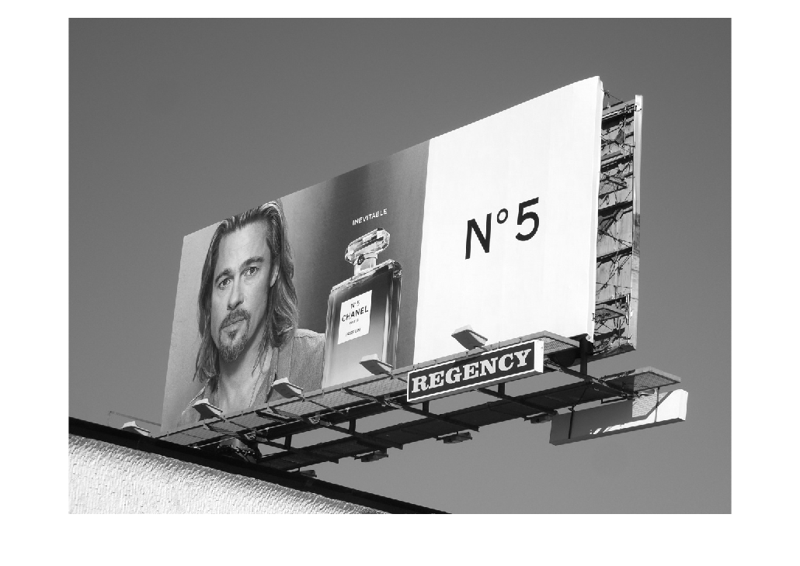
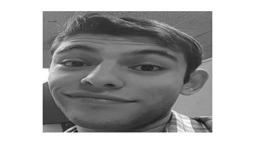
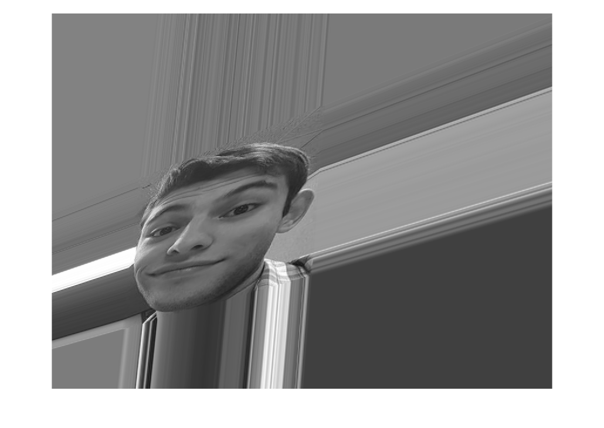
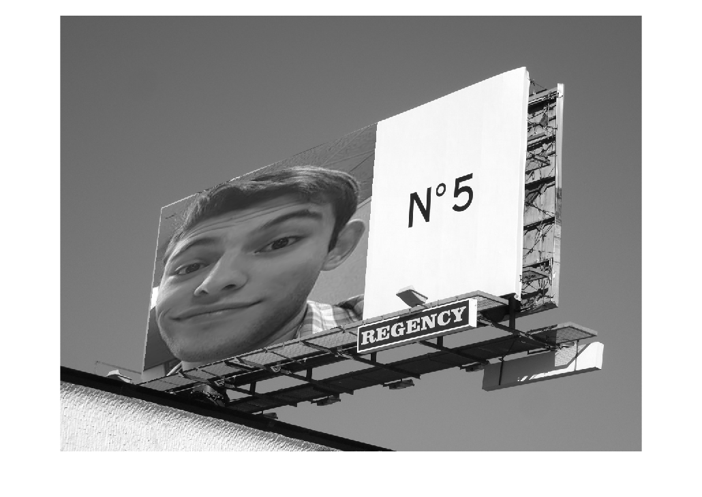

Robert Gross - Robotics & Computer Vision
Project 1
% Problem 1 img = imread('brad_pitt_perfume_billboard.jpg'); img = im2double(img); img = rgb2gray(img); figure(1); imshow(img); [x,y] = ginput(4); % original billboard image img2 = imread('rob.jpg'); img2 = im2double(img2); img2 = rgb2gray(img2); img2 = imresize(img2, [250, 350]); %just for a cleaner look figure(2); imshow(img2); [xp,yp] = ginput(4); % my pic i=1; A = []; while (i<5) A1 = [x(i), y(i), 1, 0, 0, 0, -x(i)*xp(i), -y(i)*xp(i), -xp(i); 0, 0, 0, x(i), y(i), 1, -x(i)*yp(i), -y(i)*yp(i), -yp(i)]; A = [A;A1]; i = i+1; end [u,sig,v] = svd(A); v1 = v(:,9); % the 9th column forms the null space from n-r figure(3); changed = homogwarp(img2, img, v1); imshow(changed); [length,height] = size(changed); for a = 1:length for b = 1:height check = inpolygon(a,b,[y;y(1)],[x;x(1)]); %check if each pixel is % in the boundary- if so, submit that pixel to replace billboard % image's pixel if check == true img(a,b) = changed(a,b); end end end figure(4); imshow(img); %final image
Warning: Image is too big to fit on screen; displaying at 67% Warning: Image is too big to fit on screen; displaying at 67% Warning: Image is too big to fit on screen; displaying at 67%   